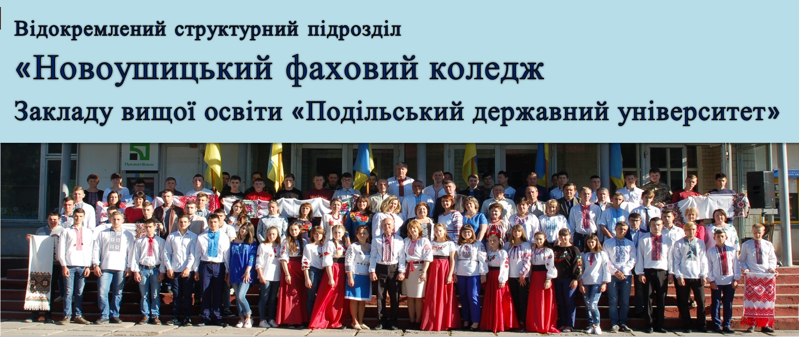

Напрямки підготовки фахівців в нашому коледжі проводиться на базі відділеня:
• спеціальність 208 "Агроінженерія"*, (“Експлуатація та ремонт машин і обладнання агропромислового виробництва”**);
• спеціальність 201 "Агрономія"*, (“Виробництво і переробка продукції рослинництва”**);
• спеціальність 142 "Енергетичне машинобудування"*, (“Монтаж і обслуговування холодильно-компресорних машин та установок”**);
• спеціальність 192 "Будівництво та цивільна інженерія"*, (“Монтаж обслуговування устаткування і систем газопостачання”**);
• спеціальність 275 "Транспортні технології"*, (“Організація та регулювання дорожнього руху”**).
* Назва спеціальності за переліком галузей знань 2015 року
** Назва спеціальності за переліком галузей знань 2007 року
Завідувач відділенням: Гавловський Олександр Казимирович
Агроінженерне відділення засноване 01.09.1930р. На відділенні готуються молодші спеціалісти за спеціальностями:
• спеціальність 208 "Агроінженерія"*, (“Експлуатація та ремонт машин і обладнання агропромислового виробництва”**);
• спеціальність 201 "Агрономія"*, (“Виробництво і переробка продукції рослинництва”**);
• спеціальність 205 “Лісове господарство”* (“Лісове господарство”**).
Термін навчання на базі базової загальної середньої освіти 3 роки і 10 місяців, на базі загальної середньої освіти 2 роки і 10 місяців. Підготовка фахівців здійснюється за державним замовленням та угодами з фізичними та юридичними особами, за денною та заочною формою навчання.
• спеціальність 142 "Енергетичне машинобудування"*, (“Монтаж і обслуговування холодильно-компресорних машин та установок”**);
• спеціальність 192 "Будівництво та цивільна інженерія"*, (“Монтаж обслуговування устаткування і систем газопостачання”**);
• спеціальність 275 "Транспортні технології"*, (“Організація та регулювання дорожнього руху”**).
Термін навчання на базі базової загальної середньої освіти 3 роки і 10 місяців, на базі загальної середньої освіти 2 роки і 10 місяців. Підготовка фахівців здійснюється за державним замовленням та угодами з фізичними та юридичними особами, за денною та заочною формою навчання.